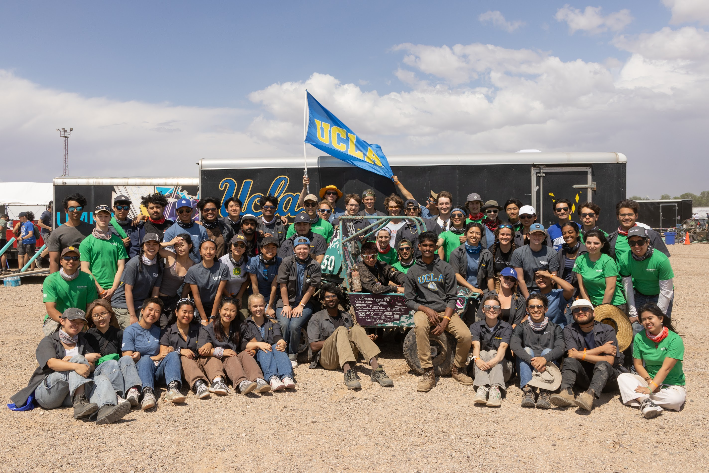
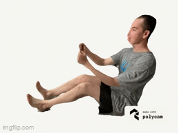
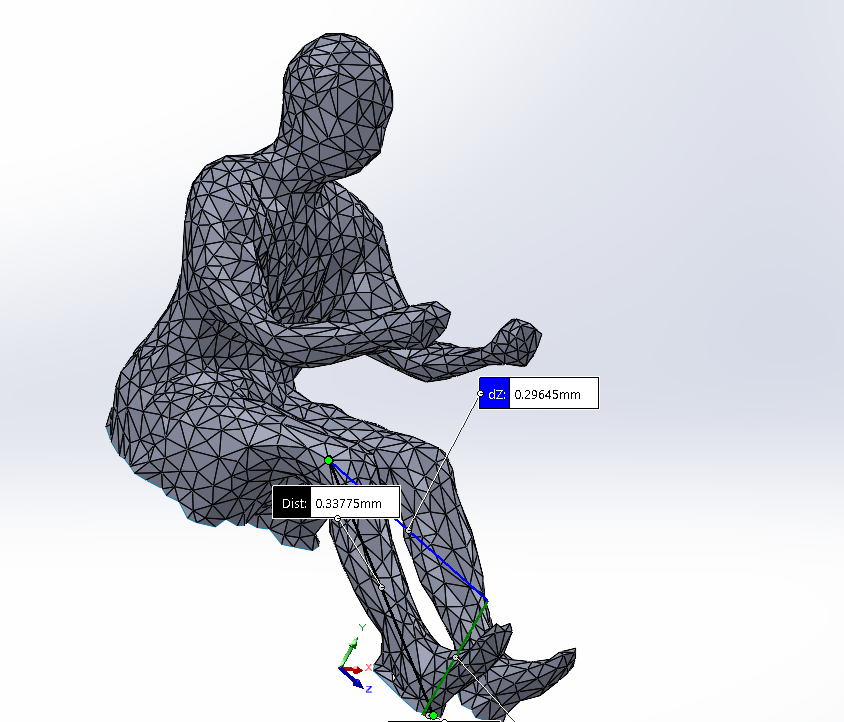
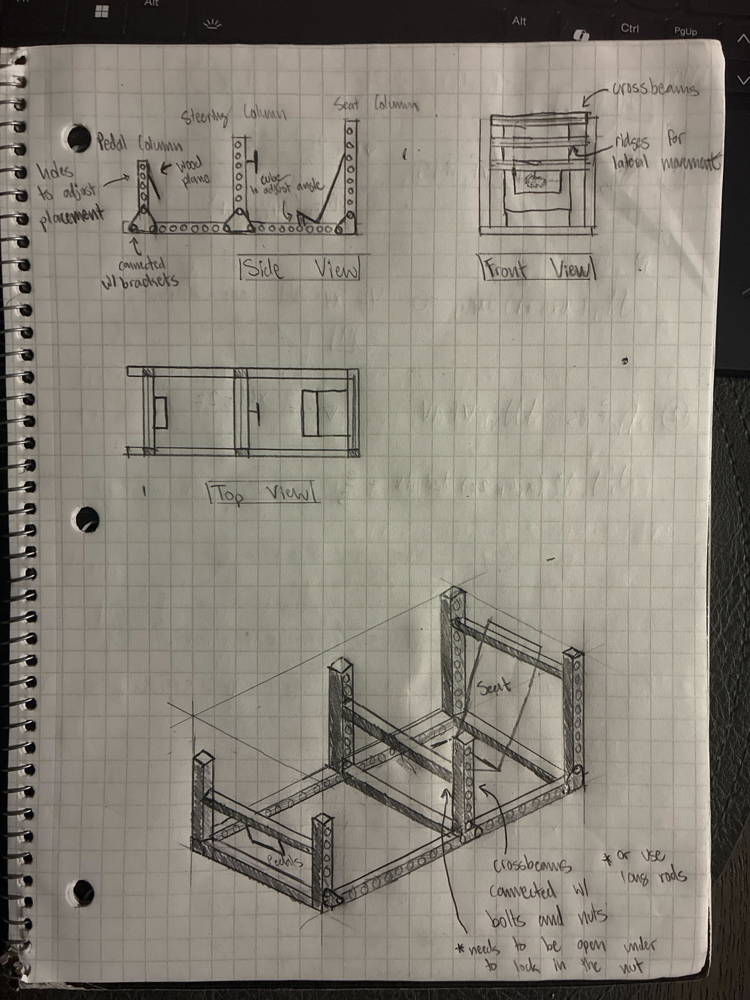
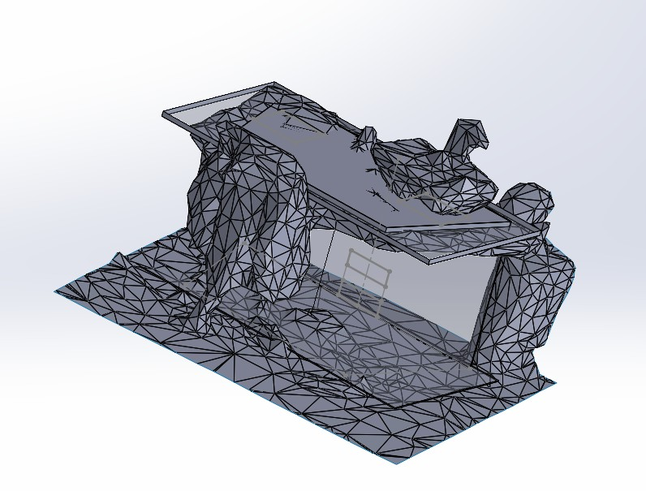
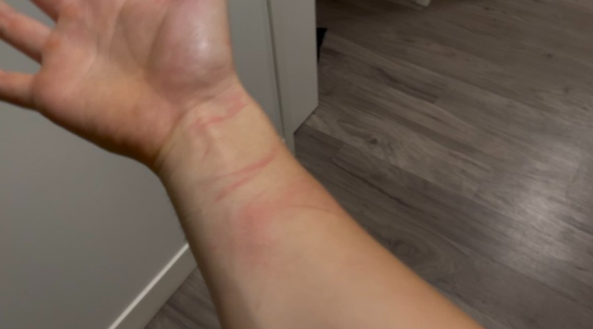
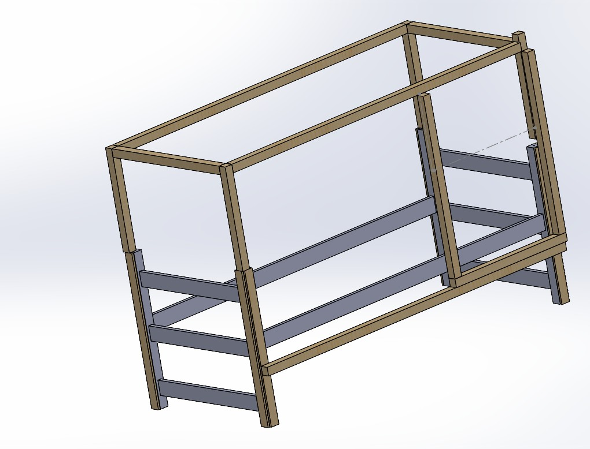
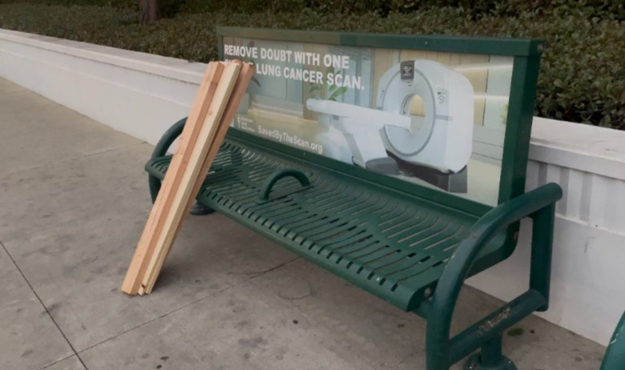
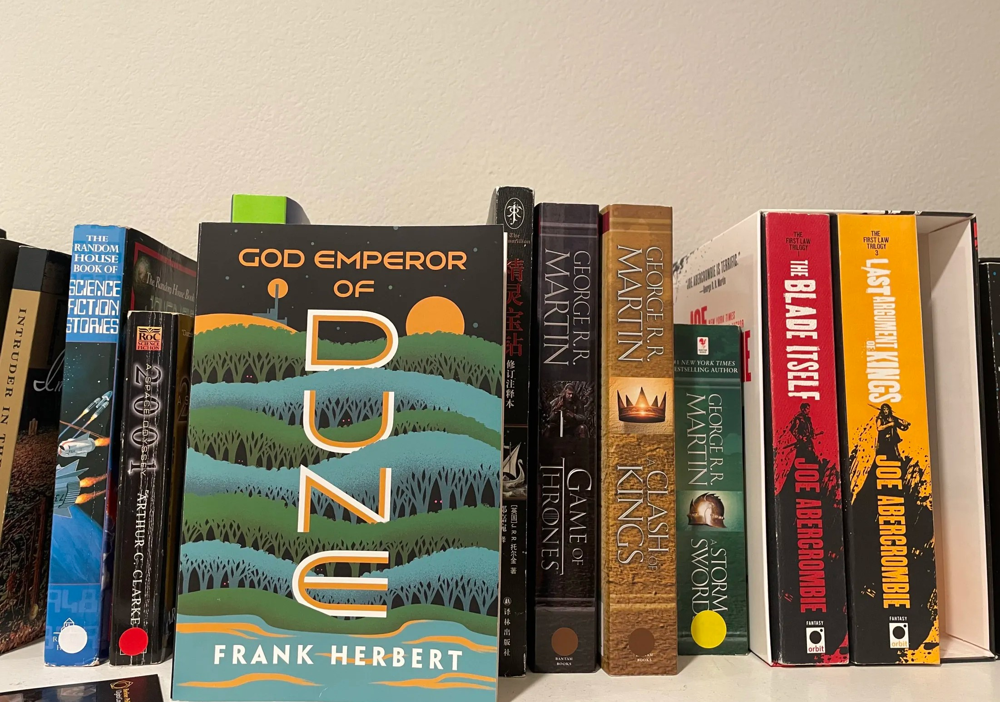
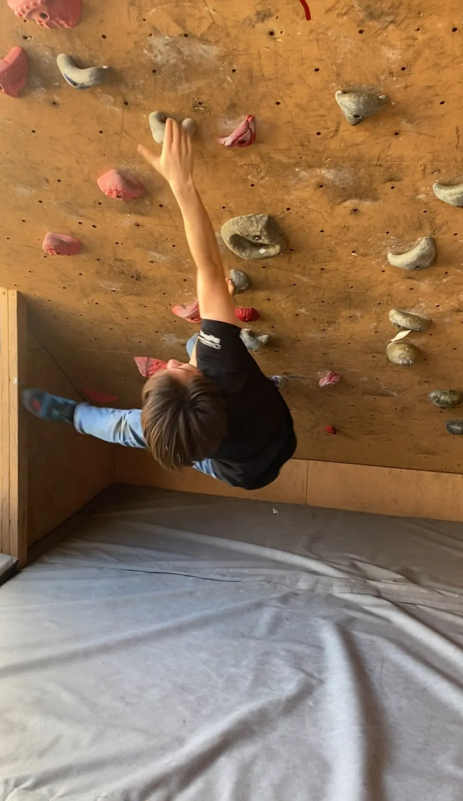

Hello! I am a junior, pursuing a bachelor's degree in mechanical engineering. You can learn more about my projects and experience on the left, as well as my personal life.
Experience
Ergonomics Project Engineer
Bruin Racing Baja (SAE)
September 2024 - Present
Responsible for designing systems that optimize driver comfort as well as range of drivers, allowing for infromed chassis design and pedal and steering wheel placement.

Purpose/Goal
The goal of the model is to accurately convert a scan of a real person into a program like SolidWorks to ensure the body fits within clearance requirements.
Step 1: Lidar Scan

The scan is taken using a lidar camera, which comes with many of the newer apple products. The scan was taken on the application Polycam, usuing a free trial.
Step 2: Scan to SolidWorkds

Scans come in a crude state. Mesh simplification happens in MeshLab to decrease the number of triangles to decrease processing time in SolidWorks. Unfortunately, the scans, when uploaded are not properly scaled. This was an aftersight, as accurate measurements of arms and legs were necessary to scale the models up. In the future, it will be recommened to hold a ruler between the hands to have a simple method of scaling.
This process is arduious and tedious, but extrememly necessary to create a versatile model. I spent hours trying to discover a way to create the most efficient method. The first was creating numerous planes to intersect the model and to loft the sketches to create a simple body part. The only issue with this was the time it took, so I tried to get a human model online and scale up the body parts accordingly, but that proved to be inefficient as well. I settled upon using Fusion 360 to split the mesh into the respective body parts and treat it as a solid body in SolidWorks. From there, I created an assembly, and used ball joints in order to mate the parts together.
Step 4: Clearence (Vid low resolution/8 color)
The model itself is great for determining the fit inside the car, but to pass rules, there must be at least a certain amount of distance between each body part and the car. Using the information provided on the rules sheet, created a plane in the middle of each body part, created an intersection sketch, and drew perpendicular lines off of the sketch all of the same distance for clearance. I then spline sketched to create a sort of projection. I then extruded the sketch past the body part by the required clearance. A failed method I tried was to scale up the body part, such that it will be the required clearance, but scaling creates expansion, which alters distance relative to the initial part. I scaled the helmet for head clearance, and that works becasue the only required part is spherical.
Purpose/Goal
The car we want to build needs to serve the driver as best as it can with provided constraints. It is my and my Co-PE's job to optimize the position and placement of the steering wheel, pedals, and seat in order for the driver to have the best comfort and agility, while maintaining proper clearances. The ergonomic jig allows for multiple drivers to enter and determine what their optimal angles are. Using that information, we will be able to create a general jig setup for all drivers to use and determine clearances and comfort. The data will then be applied to the manufacturing of the car, allowing us to pass technical inspection, while also allowing for maximal average comfort/agility between drivers.
Step 1: General Design

My Co-PE created the following drawing for guidance. We decided to use 80/20 aluminum extrusions due to their relatively inexpensive nature and T-nut adjustability, meaning the holes and brackets in the drawing are inaccurate. Knowing the general outline of the jig, we split up where he designed the structure of the jig, while I designed the concepts for the steering and pedals.
Step 2: Creating an Adjustable Steering Wheel
The placement of the steering wheel is extremely important, as it determines both the arm height/angle and the range of rotation, as well as the degree of leg separation, which could impact driver clearances. My design incorporates lateral adjustability (this is not too important, as we know the steering wheel will rougly be centered), and angular adjustability. When put into my Co-PE's jig body, the wheel will also be able to move vertically and back and forth, meaning the design allows for all relevant positions. To lock an angle, the design is such that when the bolt is screwed, the blocks of wood will move closer, thus compressing the middle block, stopping the motion through friction.
Step 3: Creating Adjustable Pedal Placememts
The placement of the pedals is also important. As our range of drivers is larger than last year, finding optimal placements that allow for maximum comfort and range is necessary. The design allows for front and back adjustability, as well as pedal angle adjustability.
Step 4: Ergo Jig Assembly (within next week)
Step 5: Ergo Jig Manufacturing (within next month)
Step 6: Ergo Jig Driver Data Collection (within next month)
Completed Projects
Home Ergonomic Leg Drawers
My position within my club is Erogonomics PE, so I decided to learn more about ergonomics by designing a discrete leg rester (a drawer). My concept is a drawer to hold stuff, but also have several of them, such that I would be able to put my feet on different heights, depending on the mood.
Unfortunately, the above picture is not the finished project and looks like trash. I just forgot to take a picture, and I now live over 100 miles away from my drawer.
Step 1: Lidar Scan to Usable Model

I took a lidar scan of my room because the technology was so cool, and I only had a week to try it out. The scan was sort of irrelevant because I just measured the desk myself and scaled the lidar up. The good news was that the lidar was accurate. I then found the usable desk area (within the legs of the desk) and defined the drawer placement within a future assembly. The usable desk area is the simple gray structure in the middle, and the full desk is the transparent structure.
Completed Project Title Two
This is the introductory text for the second completed project. Detail the objectives and initial approach here.
This is the concluding text for the second completed project. Elaborate on the results, lessons learned, and technologies used.
Detailed Documentation & Links for Project Two
More details for Project 2...
Completed Project Title Three
This is the introductory text for the third completed project. Provide an overview of the problem solved or the design created.
This is the concluding text for the third completed project. Summarize the impact and any future work related to this project.
Detailed Documentation & Links for Project Three
More details for Project 3...
Current Projects
Bed Faraday Cage
20%
Current Process: Manufacturing general wood structure. (IMG taken right after carrying the wood back)

Purpose/Goal
A bed and a faraday cage sound worlds apart, but I believe it is the future... of my living situation for the next year. There is no evidence of EMFs causing any substantial harm, yet I also see no reason not to hide against them. There is also the added bonus that, if working properly, there will be no WiFi in my sleeping area, meaning I will not have an excuse to watch YouTube in the night or morning and adopt a healthy morning and night routine. This is a concept that I thought of when my mom said that sleeping with my phone next to my head can cause tumors, which to be honest I can neither confirm nor deny. To disincentivise phone usage at the start and end of the day, as well as protect me from the light of my roommate and the early sun, I have decided to make the faraday cage bed.
Step 1: CAD of the Initial Structure and Cage Structured

I measured the bed supplied by my school aparment and rebuilt it in SolidWorks (gray part). Using the structure, I designed the cage (pine material in the CAD) to be built alongside the provided structure without needing any fixtures that will damage the provided frame. There is a part on the right that outlines a sort of window that looks to be held on by nothing. The plan for that is for there to be a small piece of wood glued or screwed into the top to serve as a holding place for a hinge, which will allow the section to swing open. The CAD served as more of a guide, as I went to home depot and believe I got scammed becasue the 2x4 was more like a 1.5x3.9. The right side of the CAD looks a little off because even though I mated things correctly, when I opened the CAD file again, SolidWorks believes I made some mating mistakes and decided to punish me for them by moving things around.
Step 2: Supplies and Transportation

I do not have a car, so getting supplies from a 6 mile away Home Depot served as a tricky endeavor. Public transit is awesome, so I rode a few buses for about 1.5 hours to reach The Home Depot, and followed by curated list. I had determined that it was necessary to purchase a lot. However, I have only returned with approximately 80% of the needed materials, as Home Depot was out a few things. Also, they didn't have any 2x2 (it was about 1.5x1.5 [they were scamming]), so I purchased a few 2x4 (more like 1.5x3.9) because it was easier to transport and good for making a structure prototype. Here is the list of things I was supposed to buy:
(7) 2 in x 2 in x 8 ft Furring Strip Boards
(1) 1/8 in x 2 ft x 100 ft 27 Gauge Hardware Cloth
(2) 3 in Mending Plates (4 pack)
(8) 2 in x 1-1/2 in x 1-3/8 in Galvanized Angle
(1) 1 lb 4 in screws (52 ct)
(1) 2-Pack 2 in Butt Door Hinge
(1) 8 oz. Wood Glue
Step 3: Manufacturing General Structure (Within next two weeks)
Step 4: Faraday Shielding Ensuring Conductive When Door Closed (within two weeks)
Step 5: Data Collection (Sleeping) (within three weeks)
Skills
Engineering & Technical Skills
CAD Software: SolidWorks
FEA & Simulation: SolidWorks Simulation, ANSYS
Manufacturing Processes: Welding, 3D Printing, Laser Cutting, Angle Grinding
Robotics & Mechatronics: Arduino, ESP 32
Data Analysis & Programming Languages: MATLAB, Python, C++, Excel
General Skills
Teamwork & Collaboration
Problem Solving & Critical Thinking
Technical Documentation & Reporting
Project Management
Interests
Music
Apart from engineering, I am very passionate about music. Initially, I was double majoring in violin and Mechanical Engineering before deciding to put all of my focus into engineering. I run a YouTube channel, where I post my compositions and performances.
Books and Films

I am an avid reader. My favorite genre is fantasy and science fiction, and I sometimes write these types of genres in my free time. Additionally, I enjoy films, with my favorite directors being Stanley Kubrick, Denis Villeneuve, and Christopher Nolan. I have a Goodreads and a Letterboxd!
Athletics

I enjoy recreational athletics of nearly any kind (though I cannot guarantee competence). My main forms of activity are running, weightlifting, rock climbing, and gymnastics, with the latter two being my most fun, yet least impressive, as I am terrible at them.